Introduction (Lecture 1)
Lecture 1: Introduction and Overview
What we’ll cover today
Syllabus and expectations
Course overview
My goals for this class
Give you tools to analyze exposures
Help you understand strengths and limitations of exposure data
Help you understand possible approaches to data analysis
Give you the ability to conduct analyses of exposure data, ranging from simple to sophisticated
Motivation for developing this class
Historical focus of exposure science has been on exposure assessment
- In other words, collection of exposure data
Current focus still stresses this
- Exposome, epidemiology
Less focus/training on how to make sense of data collected
Example of why we need this class (at least in my experience)
Datasets used in biostatistics and epidemiology classes
- Clean, well-organized, well-documented
Real life exposure datasets
- Usually none of the above
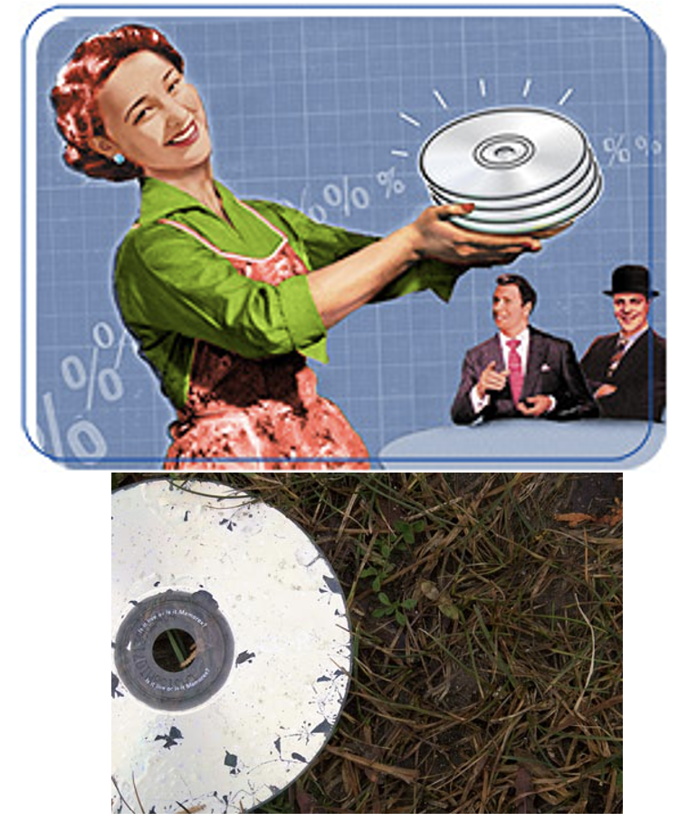
Syllabus and expectations
Syllabus on Canvas
- Any changes will be announced via Canvas
Readings posted on Canvas
Assignments posted on Canvas
Pretty much everything… on Canvas
Components of this class
Lectures will
Describe common data analysis techniques
Familiarize you with different approaches
Labs periods will
- Give us a common environment to explore shared dataset and apply analytical techniques
Readings will
- Provide examples of application of approaches
Evaluation
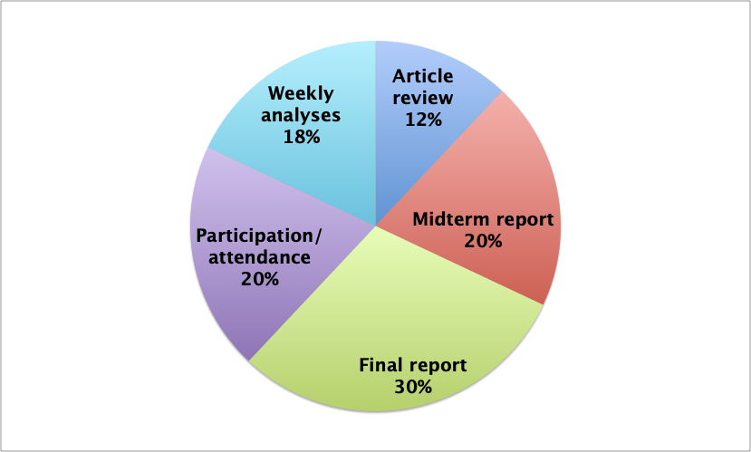
Evaluation
Class participation and attendance
- Pretty straightforward - come and participate!
Weekly analysis questions
- Short answers posed about newly available data and readings
Article review
- “Poster” on exposure analysis paper
Midterm report
- Preliminary analysis results
Final report
- Final analysis results, recommendations
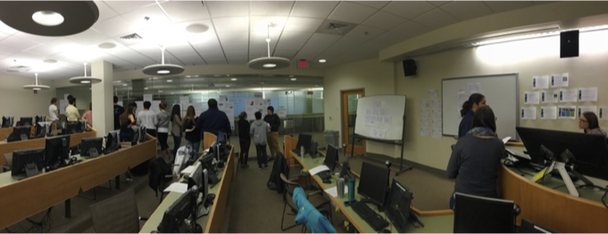
My expectations of you
Come to class (on time)
Don’t be shy - participate
Ask questions
Let me know if aspects of class aren’t working
Assignment schedule
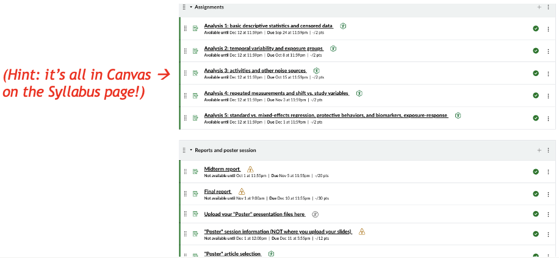
Overview of exposure analysis
Information -> data when organized
Data -> understanding when analyzed
Analysis lets us tell a story with data
How to test success of analysis
- Ask “Can I now explain these data?”
Data
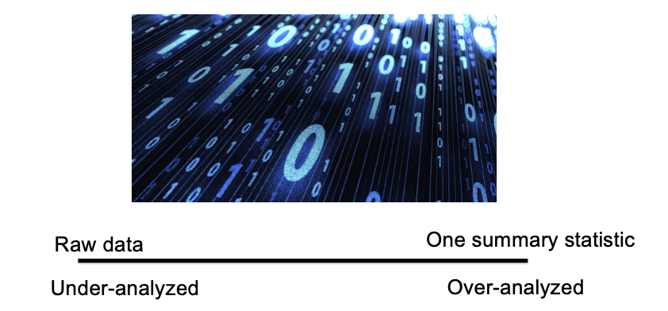
The evolution of understanding data
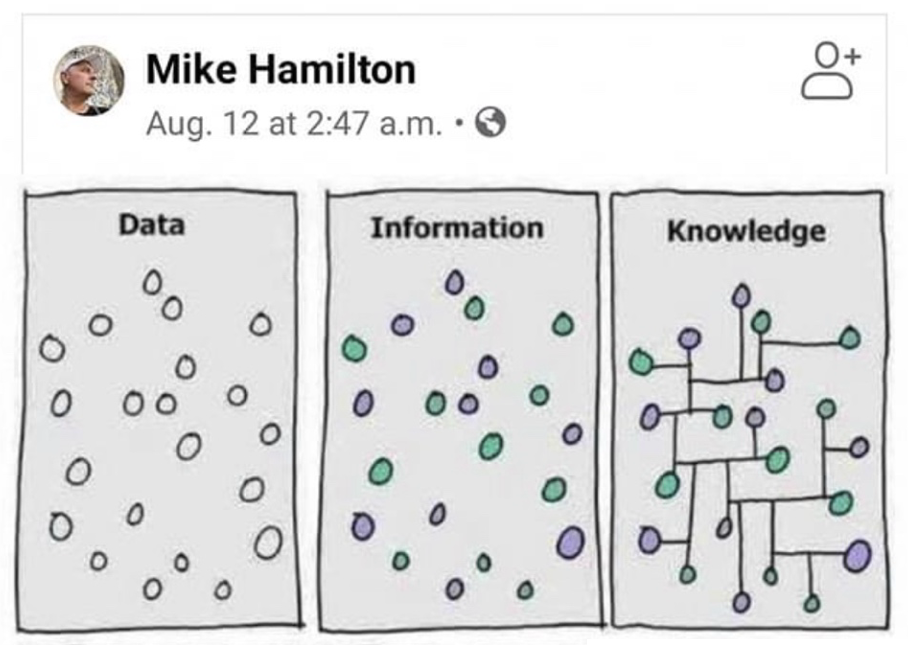
Definitions
Exposure: level or quantity of contact with an agent
- Different from vector carrier (e.g., air, water)
Agent: chemical, biological, physical hazard or set of conditions capable of causing biological response
Dose: level or quantity of agent actually deposited within body
Response: biological response to agent
The ugly truth about exposure
True exposure (T) can never be perfectly measured
Wee need to define aspect(s) of exposure (E) and dose (D) that can be measured
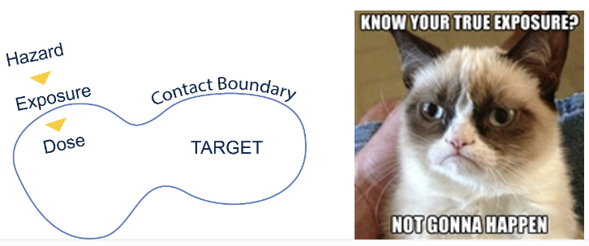
Exposures can be…
Simple (e.g., single medical x-ray)
- Single, short duration, known exposure, known dose, well-documented
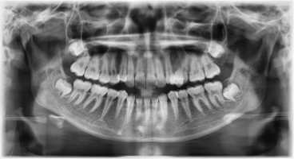
Really complex
- (e.g., 1 year of exposure to water pollution)
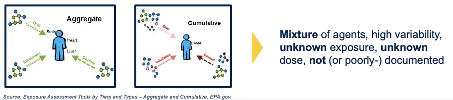
Examples of types of agents
May cause acute physiological effects (e.g., food)
May cause or protect from disease or injury
Influence disease diagnosis or outcome (e.g., screening procedures, treatment)
What is exposure analysis?
Process that quantifies human contact with a hazard
Quantification of exposure
Across individuals
Across time
Across space
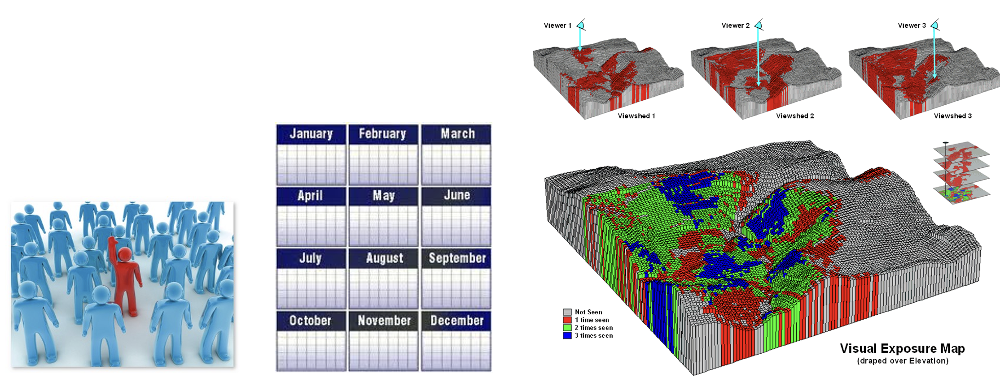
Where does exposure analysis lie in exposure-response model?
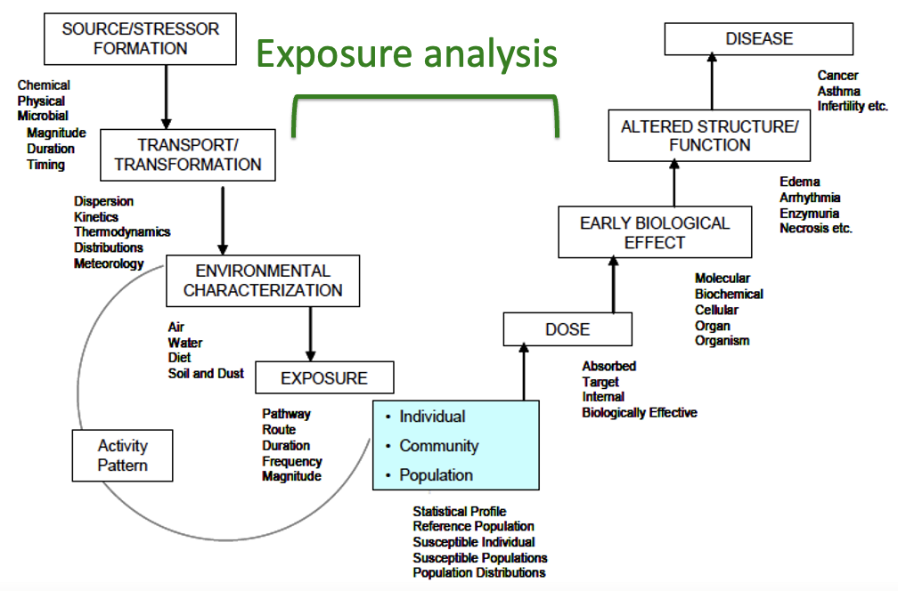
Data collections vs exposure prediction vs exposure estimation
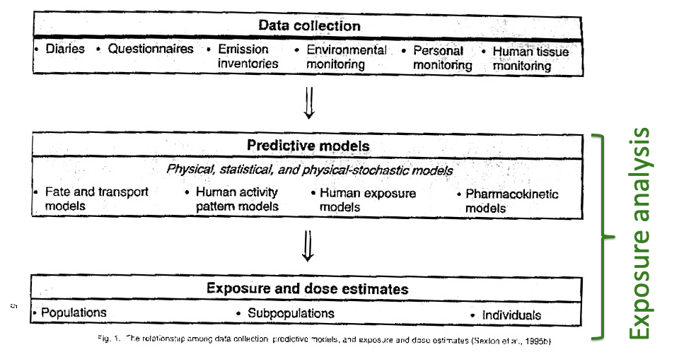
Why do we need exposure analysis?
Without it, we can’t relate exposure to response
Exposure measurements increasingly yield vast amounts of data
Real-time sensing, crowdsourced data collection, longitudinal monitoring
Need increasingly sophisticated and robust analytical approaches
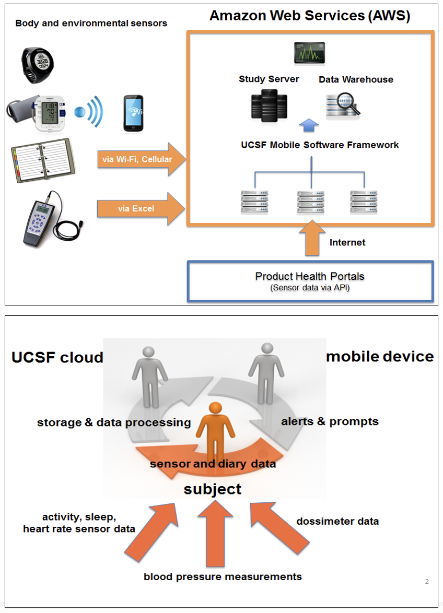
Goals of exposure analysis
Create most accurate estimates of exposure possible
Evaluate exposure controls
Need for
Effectiveness of
Characterize exposure-response relationship
Understand compliance with regulatory and recommended exposure limits
Historical context for exposure analysis
Early exposure-response analysis
Substantial exposures
Substantial health risks
Simple approaches were sufficient
Current exposures, health risks lower, more variable
More complex exposures require increasingly sophisticated analyses
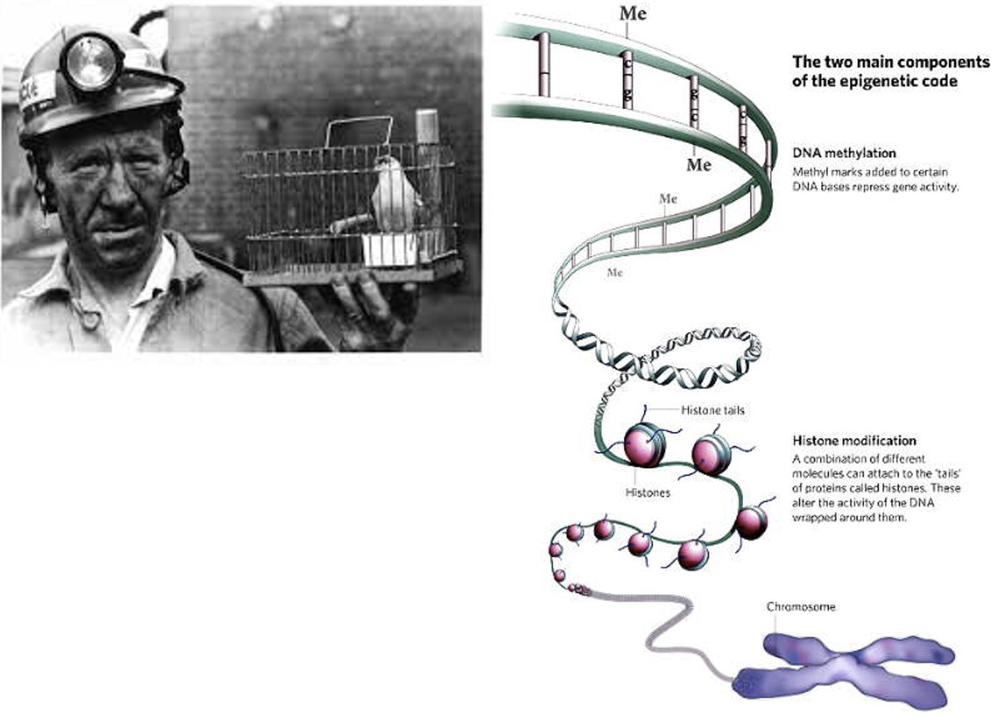
Difficulties in exposure analysis
May be no single cause for outcome or interest (e.g., multitude of possible agents)
- Any single component may contribute little to outcome risk
Interval from onset of exposure to outcome often long (e.g., weeks, months, years, or decades)
Agent may leave no measurable indicator of past exposure
Complex exposures (e.g., diet, psychosocial)
White E, Armstrong BK, Saracci R. 2008
What happens if we do it poorly?
Inaccurate exposure estimates are source of bias in epidemiological studies
Magnitude of bias is under-appreciated
- Small errors in assigned exposures can reduce epidemiological risk ratios by 50% or more!
Greatly reduces our ability to accurately characterize exposure-response relationship
Could this at least partially explain discrepancies between lab and human studies?
Information we need to understand exposure and dose
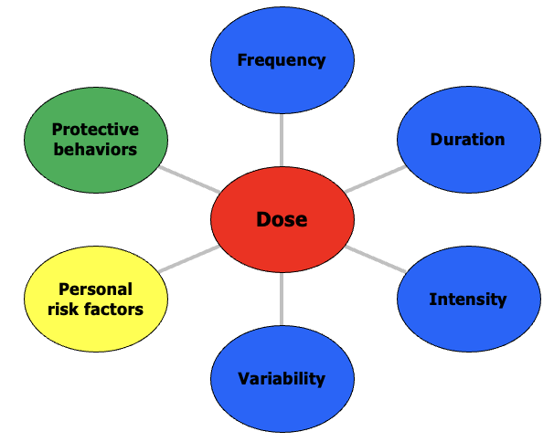
Question: how to get exposure information for these situations?
Silica exposure to communities near fracking sites?
Exposure to cosmic radiation in flight crews?
Exposures to norovirus among daycare facilities?
Micronutrient exposures through diet?
Exposure analysis issues
What kinds of data are available?
Personal vs. potential (environmental or area) exposure measurement
Subjective vs. objective data
Present vs. past exposure
Examples of exposure information
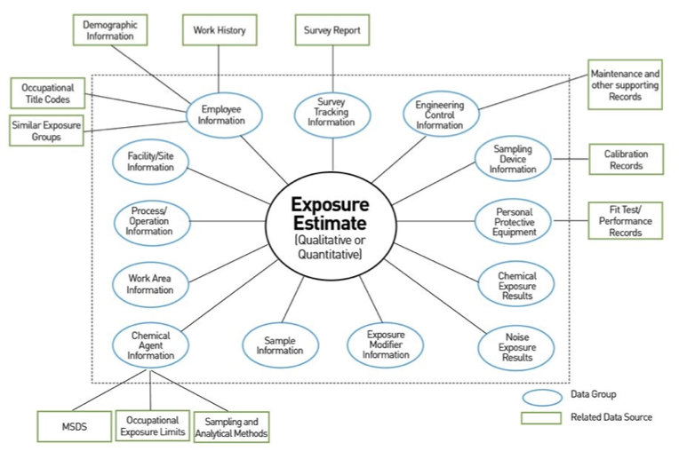
Examples of exposure information quality (from reading)
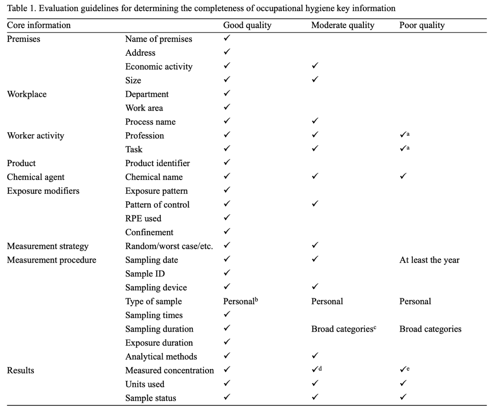
Levels of exposure analysis
Ideally, we would have actual, individual-level measurements over entire exposure period
Individual-level analysis
Just compute average/cumulative exposure
Sound to good to be true? It is. Almost never possible
Alternatively, can do group-level analysis
A priori
A posteriori
Or hybrid analysis combining individual and group
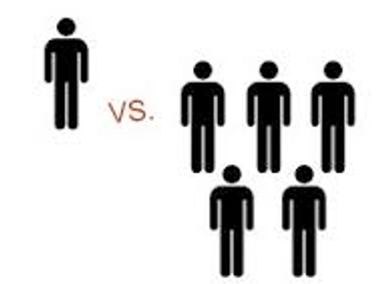
How do we describe exposures?
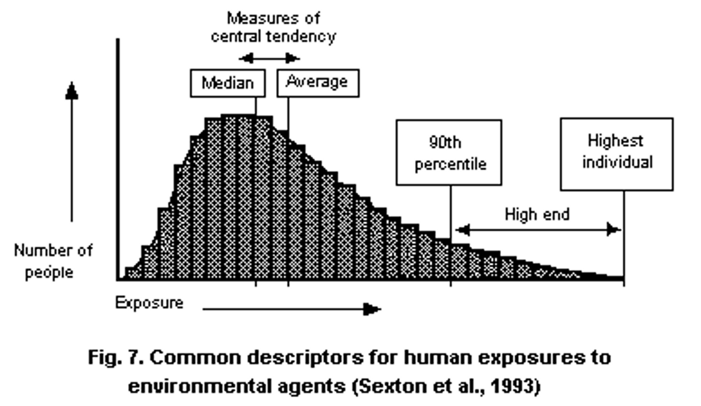
Question: when might we be interested in these specific measures?
Common exposure measures
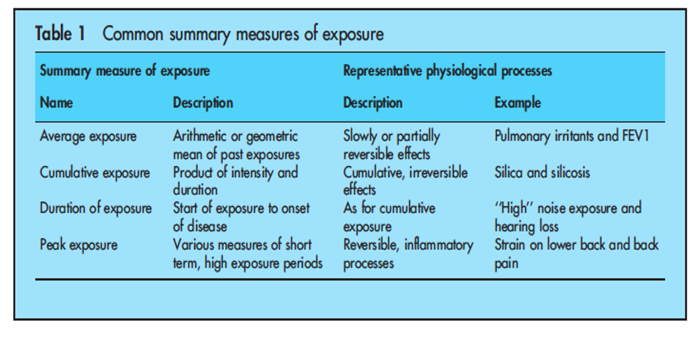
Kriebel, Checkoway, Pearce, 2007
Exposure
Are exposures equally harmful if exposure = time x intensity?
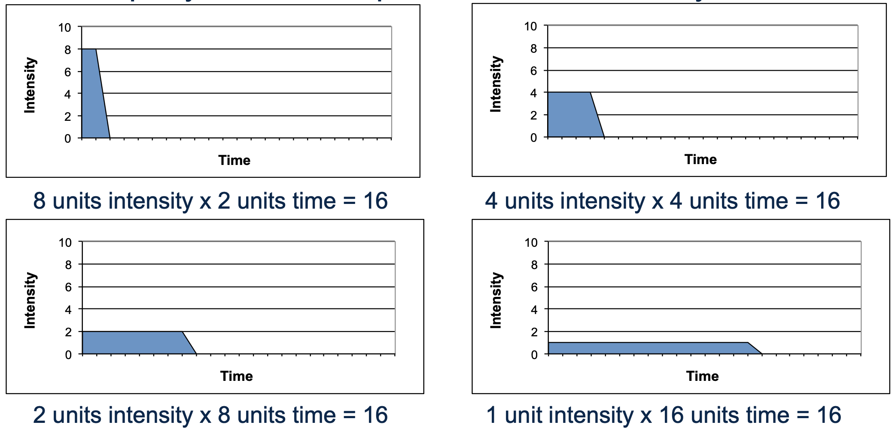
We can represent exposure or dose in different ways
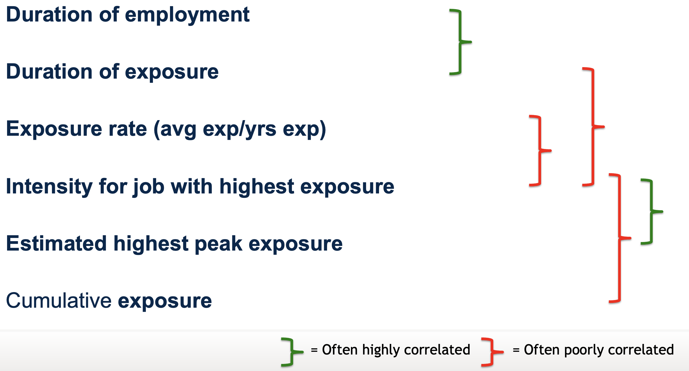
Variability in exposure
Quantitative and qualitative
Results from heterogeneity across people, places, time
- Affect precision of exposure estimates and generalizability
Types of variability
Spatial: variation due to location
Temporal: variation due to time
Inter-individual: e.g., age, sex, race, activity patterns
Intra-individual: variation in physiology or behavior
Cannot be reduced, only better characterized
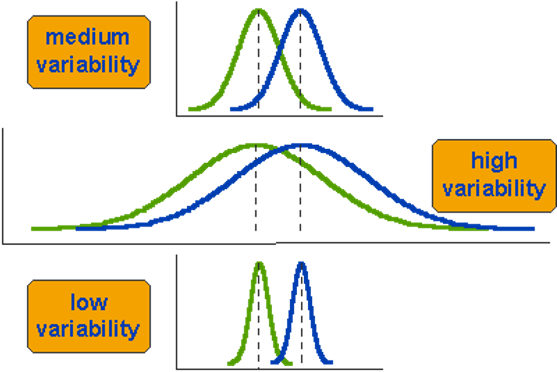
Uncertainty in exposure
Lack of knowledge about factors affecting exposure or risk of health outcome
Results in inaccurate or biased exposure estimates
Types of uncertainty
Scenario (information)
Parameter (mathematical)
Model (scientific knowledge)
Unlike variability, can be reduced
Variability vs uncertainty
Difference between variability and uncertainty may not always be clear
In general…
Data have variability
Statistics have uncertainty
Comparing imperfect measures
Agreement between multiple estimates of exposure
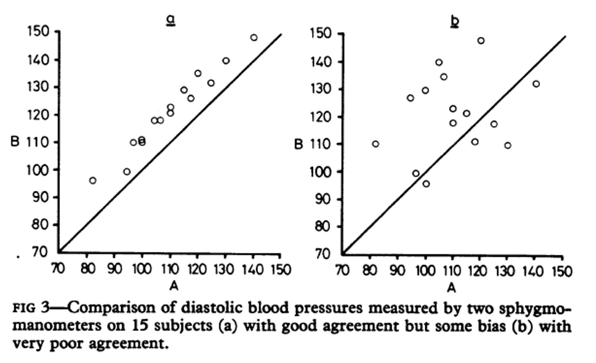
Kaupinen, 1991
Methods for exposure analysis
Low complexity
Univariate statistics
Bivariate statistics
Moderate complexity
- ANOVA, non-parametric equivalents
High complexity
- Modeling
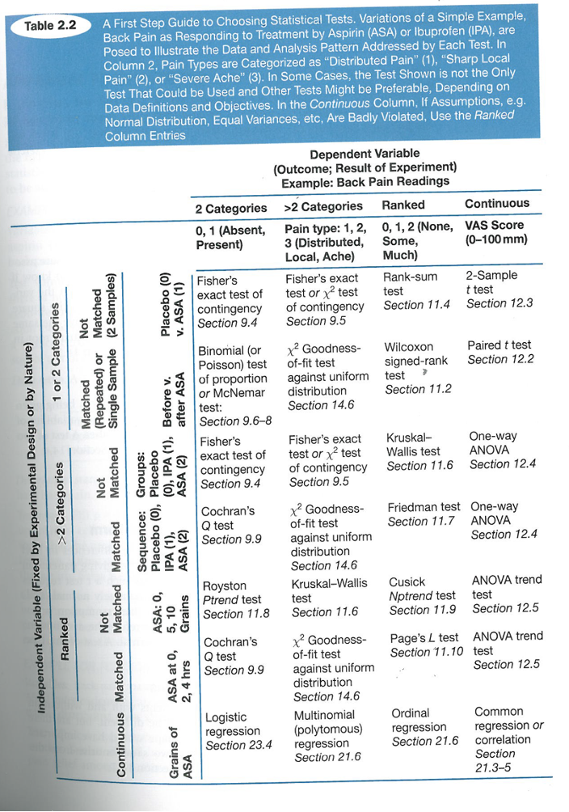
Exposure modeling
Deterministic (regression)
Linear
Logistic
Survival (will not address this)
Will touch lightly on the following
Probabilistic
Bayesian
Hybrid
Accounting for protective behavior
Must consider anytime exposed individuals could receive protection from exposure, e.g.
Use of personal protective equipment
Use of protective agents
Change in behavior
Exposure-response relationships
Will not be a primary focus of class
- Will explore a bit to give you complete analysis experience
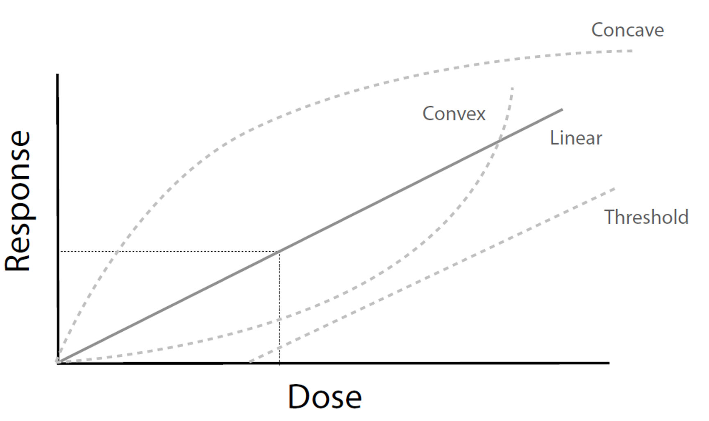
Exposure data and risk management
Risk analysis synthesizes data from multiple sources to produce interpretable risk estimates
E.g., “worst-case” or “typical” exposure
Made difficult by incomplete, conflicting, or poor quality data
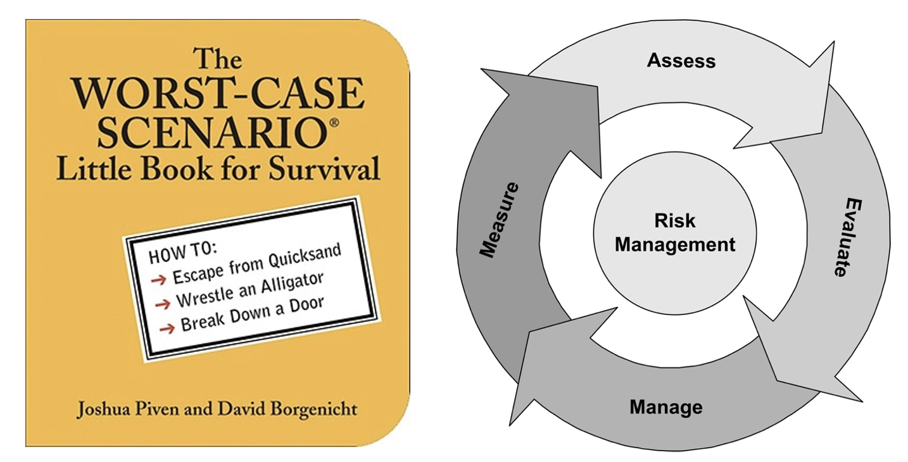
Tielemans, Marquart, De Cock, Groenewold, Van Hemmen, 2002
Presentation of data and results
Best practices for presenting data
Numerical precision
Data visualization
Table formatting
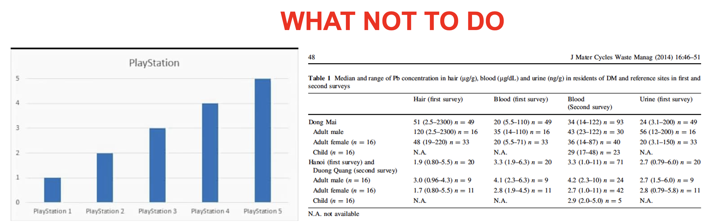
Presentation of data and results
Best practices for presenting results
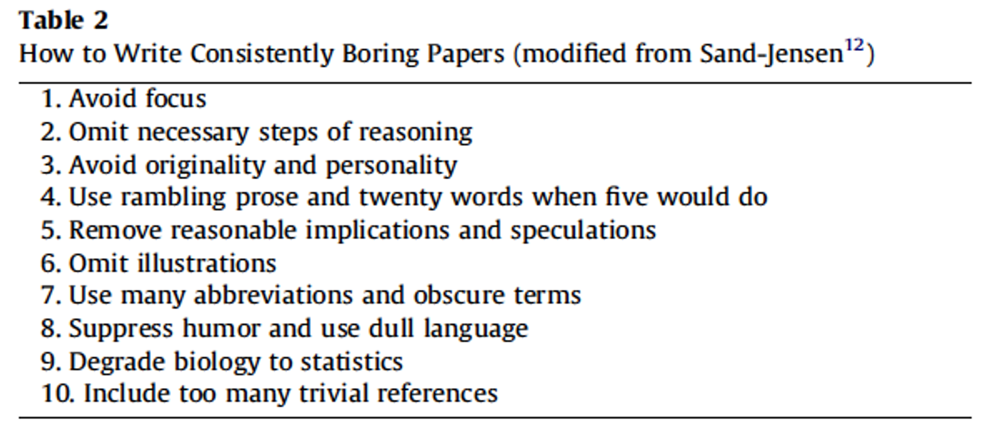
Altman, 1980
Conclusions and next session
Next session we’ll
Talk about the dataset we’ll be using, and the study it stemmed from
Start to get acquainted with R
Resources
EPA Exposure Factors Handbook: http://www.epa.gov/ncea/efh/pdfs/efh-complete.pdf
Human Exposure Assessment: Environmental Health Criteria 214: http://www.inchem.org/documents/ehc/ehc/ehc214.htm